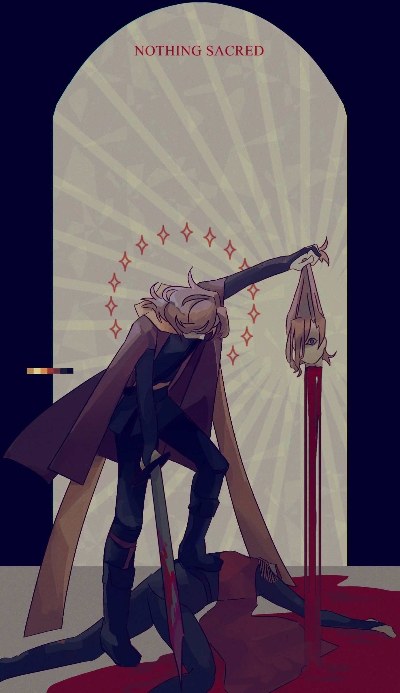

nothing sacred
creation date: july 15
character featured: callisto
apparently i started this on my birthday lol, i dont remember that fact at all.
okay so, the specific drawing prompt of callisto cutting off the head of his past self has been something i've been meaning to draw for fucking AGES. brother i was so excited to start this piece.
because of that fact though, i think i came in with too high of an expectation for the final product, and i don't think that i was ever able to meet my expectations. im not rlly upset about it though, i got as far as my skill could take take me and overall the colors are real nice. that's probs the thing im the most proud of here. but the purple highlights in this are so MUTED on my laptop in oppsed to my phone r u KIDDING ME!:?!!??!?
footnone: dude, i literally as i am typing this have just realized i forgot to include his freckles. MOTHERFUCKER. i always forget them its so annoyinfsdfjkhjsdafhkdfkjasdfhkjsdf
overall p happy w it tho